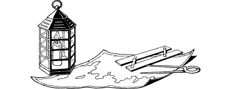

171
Soon the longboat abandons its search and returns to The Triasus. You watch as both ships unfurl their sails and depart from the coast, The Triasus heading north and the Seasprite sailing south. Sesketera must be satisfied that you perished during your encounter with the terrible Nigumu-sa. Your only regret is that Captain Radyard and his crew probably believe this to be true as well.
When you can no longer see the two ships, you take out your map and unfold it on the sand. Aided by your Kai tracking skills, you determine that you have come ashore at the tip of a mainland peninsula, at a point close to the Isle of Kobra. The nearest city is Masama. It lies over 300 miles away to the southwest, beyond a wide expanse of dense jungle and hills. The thought of traversing this uncharted territory, alone and on foot, is one that fills you with dread. But you take comfort in the knowledge that you survived your battle in the sea and that you still possess the Moonstone.
{kind=link}

You are tired and hungry after your ordeal. Unless you possess the Discipline of Grand Huntmastery, you must now eat a Meal or lose 3 ENDURANCE points.